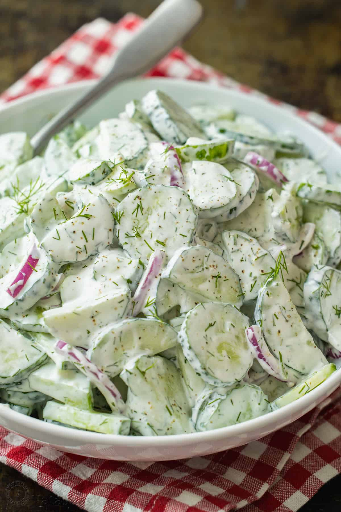

Creamy Cucumber Salad

- 1/2 cup sour cream
- 2 Tbsp lemon juice
- 1 tsp granulated sugar
- 1/2 tsp dried dill
- 1/2 tsp salt
- 1 large cucumber
- 1/4 red onion
- To make the dressing, combine the sour cream, lemon juice, sugar, dill, and salt in a bowl. Set the dressing aside.
- Peel the cucumbers, if desired. Slice the cucumbers and thinly slice the red onions.
- Combine the cucumber, red onion, and dressing in a large bowl and stir to combine.
- Let the salad sit for 5-10 minutes, give it another stir, then serve.
Home